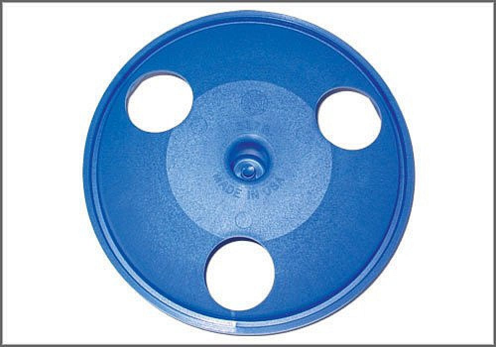

Clutch Pilot Tool - AST Tool # 3178
Clutch Pilot Tool
AST tool# 3178

Used for centering the clutch disk during R and R. Applicable to all VW with 16 valve engines and VW Golf and Jetta with 2.0 liter, 8 valve engines.
- Used for R and R of Clutch Disk
- Steel Construction
Contact AST for pricing.
Assenmacher Specialty Tools
1-800-525-2943